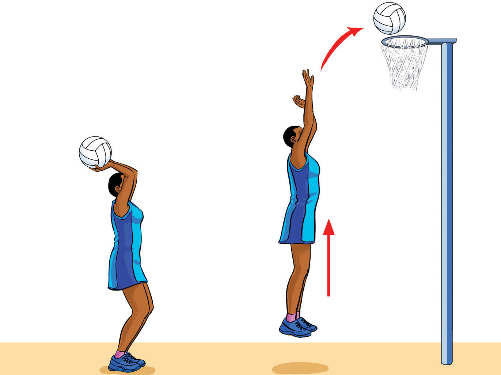

- (i) Stand with your feet shoulder-width apart and knees slightly bent, ready to explode upwards;
- (ii) Hold the ball with both hands in front of you, with your shooting hand under the ball and your non-shooting hand on the side for support;
- (iii) Focus on the target and prepare to jump, aiming for the centre of the goal ring;
- (iv) Jump upwards using your legs for power while simultaneously extending your arms to release the ball at the highest point of your jump, as shown in Figure 1.17; and
- (v) Follow through with a flick of your wrist, keeping your shooting hand relaxed and pointing towards the hoop to ensure accuracy.

a bLay-up shot
In netball, the lay-up shot is a close-range shooting technique typically used when a player is driving towards the hoop and needs to score quickly. It is especially useful when close to the goalpost and can be performed while jumping off one foot, aiming for a smooth and accurate shot. To practice the lay-up shot in netball, follow these steps:
- (i) Approach the goalpost at a controlled pace, with the ball in hand and a defender behind or to the side of you;
SPORTS STUDIES FORM TWO.indd 18
9/17/25 9:54 AM